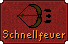

")
Fernkampf - Grundlagen
Einführung
Fernkampf ist eine sehr flexible und wirkungsvolle Fertigkeit. Es ist in vielen Situationen sehr nützlich, wenn man auf sie zurückgreifen kann, um seinen Gegner aus weiter Ferne mit einer Vielfalt von Geschossen anzugreifen. Pfeil und Bogen sind die am häufigsten eingesetzten Waffen, ihr könnt eure Fertigkeit jedoch auch mit Wurfmessern, Wurfpfeilen, Wurfspeeren und anderen Fernkampfwaffen trainieren.
Erste Schritte

Fernkampf-Ausrüstung, wie zum Beispiel Pfeile und Bögen, kann man in Bognereiläden kaufen, die man in den folgenden Orten findet:
- Catherby
- Rimmington
- Varrock
Um einen Bogen, der sich in eurem Inventar befindet, in die Hand zu nehmen, müsst ihr nur mit der linken Maustaste auf ihn klicken. Ein Klick auf einen Satz Pfeile verstaut sie in eurem Köcher. Nun seid ihr bereit, eure Gegner anzugreifen.
Bögen sind die Lieblingswaffe von Fernkämpfern. Sie können sowohl normale Pfeile verschießen als auch mit Gift versehene, die einem Gegner zusätzlichen, fortlaufenden Schaden zufügen können. Langbögen sind schlagkräftiger, aber feuern langsamer. Kurzbögen können Pfeile schneller abschießen, sind dafür aber nicht so stark.

Einige eurer Pfeile werden ihr Ziel verfehlen und bleiben im Boden in der Nähe des Monsters stecken. Ihr könnt sie nach dem Kampf aufsammeln und wieder verwenden. Die Chancen, eure Geschosse zu behalten, stehen allerdings nur bei 80 % und außerdem bleiben die Geschosse nur ein paar Minuten liegen - also stellt euch darauf ein, bei längerem Training ein paar zu verlieren!
Ihr könnt ein Monster oder einen Spieler nur angreifen, wenn kein Hindernis euch die Sicht versperrt (wie zum Beispiel ein Baum oder eine Wand zwischen euch und eurem Gegner). Gegner, die mit Geschossen angegriffen werden, werden versuchen, an euch heranzukommen und euch im Nahkampf anzugreifen. Beschießt ihr ein Monster von der anderen Seite eines Hindernisses, dann hat das Monster keine Chance, zurückzuschlagen. Das bedeutet, dass ihr keinen Schaden nehmen könnt.
Seid jedoch gewarnt - einige Monster beherrschen den Fernkampf ebenfalls und werden euch aus der Distanz angreifen. Die erfahrensten Fernkämpfer benutzen das Gelände, um sich einen Vorteil zu verschaffen, da sie im Nahkampf relativ schwach sind.
Angriffstechniken
| Kampfstil | Symbol |
| Präzise | ![[Bild]](../../img/main/kbase/combat/accurate_range.gif) |
| Schnellfeuer |  |
| Weitschuss | ![[Bild]](../../img/main/kbase/combat/long_range.gif) |
Ihr kommt dann zum Kampfoptionsfenster, in dem ihr euren Kampfstil auswählen könnt.
Habt ihr präzise Angriffe ausgewählt, dann erhöht sich die Chance, dass eure Pfeile den Gegner treffen und ihm Schaden zufügen. Beim Schnellfeuern schießt euer Charakter die Pfeile schneller ab. Weitschüsse ermöglichen es euch, Gegner aus einer größeren Entfernung anzugreifen als mit den anderen beiden Angriffsarten.
Schaden zufügen
 Genauigkeit: Eure Genauigkeit beim Fernkampf entscheidet, wie oft ihr eurem Gegner Schaden zufügt. Sie steigt proportional zu eurer Stufe im Fernkampf. Genauigkeit hängt auch von eurer Ausrüstung ab, also Waffen und Rüstzeug mit ihren zugehörigen Fernkampf-Boni. Die Genauigkeit entspricht der Angriffs-Fertigkeit eines Nahkämpfers.
Genauigkeit: Eure Genauigkeit beim Fernkampf entscheidet, wie oft ihr eurem Gegner Schaden zufügt. Sie steigt proportional zu eurer Stufe im Fernkampf. Genauigkeit hängt auch von eurer Ausrüstung ab, also Waffen und Rüstzeug mit ihren zugehörigen Fernkampf-Boni. Die Genauigkeit entspricht der Angriffs-Fertigkeit eines Nahkämpfers. Wichtig: Eure Fertigkeiten in Angriff, Stärke und Verteidigung haben keinerlei Auswirkung auf euren Erfolg im Fernkampf.
Je besser eure Fernkampfwaffe ist, desto höher ist euer Bonus bei einem Fernkampfangriff.
Rüstzeug aus Leder und Drachenleder verschafft euch Verteidigungsboni (stechen, schlitzen, zermalmen, Magie und Fernkampf) sowie einen Fernkampf-Angriffsbonus.
Fernkampf-Stärke: Pfeile geben keinen Angriffs- oder Verteidigungsbonus, aber je stärker der Pfeil ist, den ihr verwendet, desto mehr Schaden fügt ihr euren Gegnern zu. Das funktioniert so wie Stärkeboni bei Nahkampfwaffen.
Bitte klickt hier, um zu den Fragen und Antworten für Fernkampf zu kommen

Weitere Artikel in Kampf
|
Weitere Artikel in Fernkampf
|
|
Weiterführende Informationen Wenn euch dieser Artikel nicht weitergeholfen hat, könnt ihr in den folgenden Kapiteln der RuneScape-Webseite mehr Informationen finden:
|
|